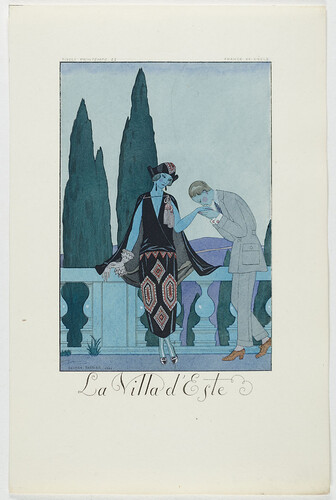
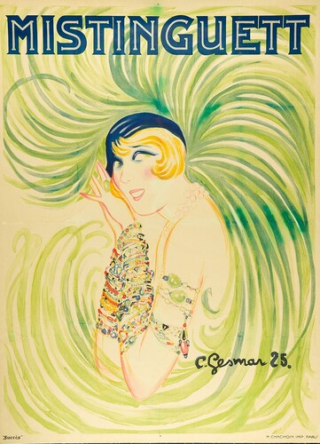
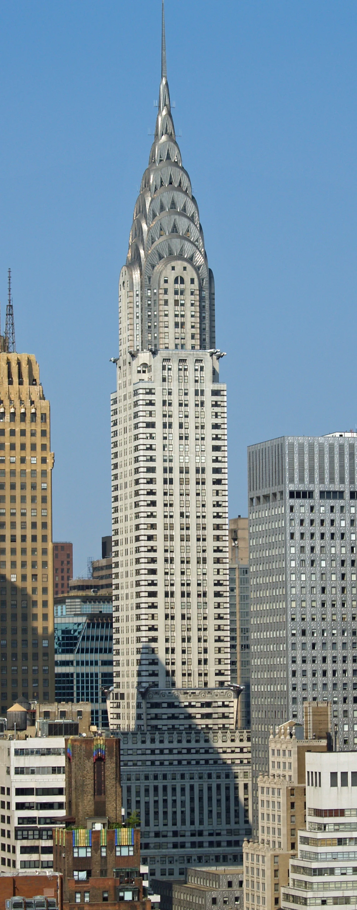

直線を、軸の中心に集める。
細い軸の中央で矩形の枠が重なり、上下に小さな段差を作っています。器全体に模様を広げず、輪郭の明瞭な幾何学的装飾を一点に集中させています。
作品・制作の例8件を紹介しています。実作品画像4点、参照・関連画像0点。画像の収集は継続中です。
様式
Art Deco
このページのグラスには、小さな階段のような飾りがあります。
その上では、なめらかな器が大きく広がっています。
アール・デコでは、こうした物だけでなく、建物や服、広告でも新しい時代の飾り方を探しました。
高価な手づくりの物も、工場でたくさんつくる物もあります。
実作品を見る

画像を表示できませんでした。下の出典ページで確認できます。
René Lalique（ルネ・ラリック） / 1925年
Cleveland所蔵2012.136の全体写真1点。制作年は1925年、高さ18.3cm、径7.8cm。自動車用マスコット《Spirit of the Wind》とは別作品です。製品のモデル名は未確認です。
細い軸の中央で矩形の枠が重なり、上下に小さな段差を作っています。器全体に模様を広げず、輪郭の明瞭な幾何学的装飾を一点に集中させています。
上のボウルは口へ向かって広がり、下の脚は円形です。その間に角張った装飾を挟むことで、曲面・直線・円の違いが際立ちます。Art Decoを直線だけの様式とは見なさないための比較例です。
無色のガラスは輪郭と稜線の反射で形が見えます。黒い背景と左へ伸びる影は撮影条件によるものです。モデル名や製法は写真から推定せず、所蔵記録のガラスという表記に留めます。
René Lalique, Wine Glass, 1925. Cleveland Museum of Art, Bequest of Dr. Paul J. Vignos Jr., 2012.136. CC0.
出典で作品・資料を見る ↗CC0 1.0 Universal
Museum individual Open Access/public-domain eligibility; artist1860–1945, object1925. Distinct from photograph license.
Official API share_license_status=CC0 and exact image URL; individual object page authorizes reuse under CMA OA policy.
所蔵館の個別公開指定とCC0方針に基づきます。全法域の権利保証や美術館の推奨を意味しません。
公式配信の原JPEGは無加工で保持し、拡大リンクから取得できます。ページ表示には縦横比と全画面を保った縮小WebPを使用（切り抜き・色補正なし）。原JPEGと各表示画像のサイズ・SHA-256を権利台帳に別記録。撮影者名は未確認のため推定しません。
画像の利用条件 ↗Uniform aspect-preserving LANCZOS resize; WebP quality92/method6; original ICC retained when present. No crop, color adjustment, retouch, or overlays.
実作品を見る

画像を表示できませんでした。下の出典ページで確認できます。
ジョルジュ・バルビエ（デザイン）／メイニアル（出版） / デザイン：1922年／刊行：1923年
服飾年鑑『ファルバラとファンフルリュシュ』1923年版の一葉です。配信画像は336×500ピクセルのため、小さな図版として掲載しています。
ひし形模様の服を着た女性が、身をかがめる男性に手を差し出しています。人物の曲線と、背景の細長い木を見比べられます。
ジョルジュ・バルビエ（デザイン）／メイニアル（出版）《エステ荘――服飾年鑑の一葉》、デザイン：1922年／刊行：1923年。ハンブルク美術工芸博物館、EG2017.4.104。Public Domain Mark 1.0。
出典で作品・資料を見る ↗Public Domain Mark 1.0
所蔵館は原作品をパブリックドメインとして公開しています。
所蔵館が、この画像をPublic Domain Mark 1.0で公開しています。
配信された原画像を無加工で保持しています。
所蔵館による個別の指定に基づきます。すべての国での権利保証や、所蔵館の推奨を意味しません。
出典先の原画像を開く ↗画像の利用条件 ↗実作品を見る

画像を表示できませんでした。下の出典ページで確認できます。
シャルル・ジェスマール / 1925年
1925年に制作された劇場ポスターです。所蔵館の配信画像は361×500ピクセルのため、大きく引き伸ばさず掲載しています。
名前の文字は濃く大きく、羽根は淡い色で広がります。文字と人物の違いに注目しましょう。
顔や装飾を単純な形と色にまとめ、舞台に立つ人の華やかさを伝えています。
シャルル・ジェスマール《ミスタンゲット》1925年、印刷：Imprimerie H. Chachoin。ハンブルク美術工芸博物館。Public Domain。
出典で作品・資料を見る ↗Public Domain
所蔵館が原作品をパブリックドメインと表示。
所蔵館が原作品と画像の双方をPublic Domainと表示。
提供画像の全体を、そのまま表示します。原寸361×500ピクセルを超えて拡大しません。
画像の利用条件 ↗実作品を見る

画像を表示できませんでした。下の出典ページで確認できます。
ウィリアム・ヴァン・アレン（建築）／David Shankbone（写真） / 建築1928–1930年／写真2007年8月
2007年8月の外観写真です。地上階の内部は写っていません。元画像の画角をそのまま掲載しています。
建物の幅が段階的に細くなり、頂部へ目を導きます。
銀色の頂部で、弧を描く線と三角形の窓を探してみましょう。
ウィリアム・ヴァン・アレン設計《クライスラー・ビル》1928–1930年。写真：David Shankbone、2007年8月。Wikimedia Commons、CC BY-SA 3.0。
出典で作品・資料を見る ↗CC BY-SA 3.0
建築の外観を紹介する写真。建築作品の扱いと写真の利用条件を分けて確認しています。
撮影者David Shankboneの写真をCC BY-SA 3.0で利用。
提供画像の全体を保持して縮小し、WebP版も作成。切り抜き、回転、色の変更はしていません。縮小版にもCC BY-SA 3.0を適用。
画像の利用条件 ↗高級家具・寄木細工・素材
木や布、金属など、いくつもの材料を使った家具です。
箱のような形に、木を組み合わせた細かな模様をつけています。
形だけでなく、材料や手仕事にも目を向ける作品です。
作品・資料の出典を見る ↗作品名（出典表記）："Fuseaux" Cabinet
Emile-Jacques Ruhlmann（デザイン） / 1925年頃 / 高級家具・寄木細工・素材
対象はMet 25.231.2で、99.4 × 84.5 × 49.2 cmです。
1925年に直接購入されました。
男性が身支度をする台だった可能性があり、酒や葉巻を入れる用途へ変えた例も記録されています。
この家具が1925年の展示館に出品されたとは断定しません。
展示館にはLéon Jallotの家具もあったため、すべてをRuhlmannの作品とまとめることはできません。
すっきりした箱形に、複雑な寄木細工（よせぎざいく。
木を組み合わせて模様をつくる技法）と、糸を巻く紡錘（ぼうすい）のような脚を組み合わせた家具です。
Macassar ebonyという黒檀（こくたん）、象牙、絹、銀色の青銅が使われています。
図形の形だけでなく、高価な材料と細かな仕事からアール・デコの工芸を見ます。
交通広告・リトグラフ
鉄道旅行をすすめるポスターです。
列車、文字、斜めの線をどう組み合わせたかが、見る手がかりになります。
車につける飾りと並べると、旅や速さを伝える違う方法を比べられます。
作品・資料の出典を見る ↗作品名（出典表記）：Nord Express poster
A. M. Cassandre / 1927（MoMA個別記録） / 交通広告・リトグラフ
MoMAの現在の記録番号は65.1943.22です。古い出品リストには別の番号があるため、同じ名前の別のポスターや、古い番号と混同しません。斜めの線、文字、列車の関係は、画像を取得した後に原画像で確かめる課題です。
鉄道旅行の広告を見るための代表候補です。車につける飾り《Spirit of the Wind》と並べると、移動を楽しむ近代の文化を二つの角度から比べられます。一つは情報を伝える印刷物、もう一つは速さを象徴する製品です。
超高層建築・素材・内部の動線
建物の外側やいちばん上の部分に、金属を使っています。
中では、三角形のホールと柱が、エレベーターへの道をつくります。
外の形だけでなく、入って歩く場所も考えるための建物です。
作品・資料の出典を見る ↗作品名（出典表記）：Chrysler Building（外観・地上階内部）
William Van Alen（建築設計） / 1930年（5月27日開館／8月に完成と見なされた） / 超高層建築・素材・内部の動線
1930年4月の入居開始、5月の開館、8月に完成とされたことは区別します。
建築当局の記録日である1932年2月19日も別です。
今の外観やロビーの写真が、1930年の姿をそのまま示すとは限りません。
建築作品と現代の写真の権利は、別々に確認します。
掲載画像はDavid Shankboneが2007年8月に撮影した外観です。
内部の写真ではありません。
LPCは、Nirosta鋼による外壁や頂部、企業を象徴する建築表現を、アール・デコの特徴として説明しています。内部では、三角形のホールと柱が、エレベーターへ向かう動きを導きます。輪郭の図形だけでなく、材料、街の中での姿、建物に入る体験を見ます。
ガラス製品・自動車用マスコット
車につける飾りです。
風になびく髪が、速さや、機械の動く力と結びつけられています。
図形の模様だけではない飾り方を、考える例です。
作品・資料の出典を見る ↗作品名（出典表記）：Spirit of the Wind, car mascot
René Jules Lalique（設計）／Lalique glassworks（製造） / 1925年頃（V&Aの概年代表記） / ガラス製品・自動車用マスコット
所蔵番号はCIRC.199-1972です。おおよその年代を、原型の設計年や、この作品を製造した年と決めつけません。以前の候補《Victoire》と同じ作品かは未確認のため、別名とはしません。この一点だけで建築、家具、服飾まで代表させることはできません。
V&Aは、風になびく髪を、速さや機械の時代の生き生きした動きと結びつけて説明しています。図形の模様だけでなく、移動する文化を飾りに表す、アール・デコの一面を見られます。
工芸・ガラス
ラリックがつくったワイングラスです。
長方形を段にした飾りと、なめらかに広がる器を組み合わせています。
まっすぐな線と曲がった線が、一つの物にあります。
作品・資料の出典を見る ↗作品名（出典表記）：Wine Glass（Cleveland 2012.136）
René Lalique（ルネ・ラリック） / 1925年 / 工芸・ガラス
掲載したのはラリックの1925年のワイングラス1点です。
段状の図形の飾りと、曲がった面の違いを確認できます。
ただし、広告・家具・建築も含む3〜5点の比較セットはまだ完成していません。
作者のすべての作品を同じ様式とはしません。
この作品の年代と形を、一次資料（作品や当時の記録などの元資料）の説明と比べています。
V&Aは、1920年代のラリック（Lalique）をアール・デコのガラス制作の中で説明しています。その解説と、この作品の長方形を段状に重ねた飾りを比べます。曲がった面と図形が、一つの器に共存するところに注目します。
版画・エッチングと型紙による彩色（ポショワール）
ひし形模様の服を着た女性が、身をかがめる男性に手を差し出しています。人物の曲線と、背景の細長い木を見比べられます。
作品・資料の出典を見る ↗原題：La Villa d’Este, from Falbalas et Fanfreluches 1923
ジョルジュ・バルビエ（デザイン）／メイニアル（出版） / デザイン：1922年／刊行：1923年 / 版画・エッチングと型紙による彩色（ポショワール）
服飾年鑑『ファルバラとファンフルリュシュ』1923年版の一葉です。配信画像は336×500ピクセルのため、小さな図版として掲載しています。
所蔵館がこの一葉を「Art Déco」に分類しています。服飾年鑑の挿絵を通して、アール・デコとファッション印刷物の関係を見る例です。
陶芸・日用品
高価な一点物だけではないアール・デコの例。工場で作った家庭用の器に、女性の絵付け職人たちが手で花を描きました。
作品・資料の出典を見る ↗原題：Crocus, cream jug
クラリス・クリフ（デザイン）、ニューポート・ポタリー（製造） / 1928年 / 陶芸・日用品
このページでは作品画像を掲載していません。所蔵館の出典で作品を確かめられます。
劇場ポスター・リトグラフ（石版画）
大きく濃い名前の文字と、淡い羽根の曲線。同じ画面の中で、目立たせ方を変えています。
作品・資料の出典を見る ↗原題：Mistinguett
シャルル・ジェスマール（デザイン）、H. Chachoin（印刷） / 1925年 / 劇場ポスター・リトグラフ（石版画）
画像は所蔵館が配信する小さなサイズです。細部の拡大には向きません。
所蔵館がアール・デコに分類する劇場ポスターです。大きな名前と淡く広がる羽根を組み合わせ、舞台に立つ人の華やかさを街へ伝えます。
1925年、パリで現代の装飾美術を紹介する大きな博覧会が開かれました。リュールマンの家具やラリックのガラスなど、昔からの技術を新しい形へ生かす仕事が集まりました。
当時の呼び方と、後に広まった「アール・デコ」という名前は同じではありません。一つの団体が守る決まりというより、いくつものデザインの動きをまとめて見る言葉です。
リュールマンの《フュゾー型キャビネット》は、すっきりした箱形に、細かい木の模様を組み合わせています。木、象牙、絹、金属という材料の違いも表現になります。
四角い形だから安くつくれるとは限りません。このような高級家具では、材料の選び方と職人の手仕事が重要です。一方、同じ時代には、もっと多くの家庭へ届ける製品もつくられました。
イギリスのクラリス・クリフは、鮮やかな模様を皿や水差しに広げました。《クロッカス》では、上へ伸びる筆の動きで花を描き、細い緑の線で葉を足します。絵付けの担当者たちが、その模様を製品へ展開しました。
工場生産と手仕事は、いつも正反対ではありません。形をそろえてつくる器に、人の手で色を付ける方法もあります。値段や数量だけでなく、どの工程を誰が担ったかを見ると、製品の成り立ちが見えてきます。
鉄道や船の広告は、旅の目的地だけでなく「近代的な生活への憧れ」も伝えました。高級な船に乗れない人も、街のポスターを通してそのイメージに触れます。
《ノール・エクスプレス》は鉄道旅行の広告です。車の飾り《風の精》とは違う品ですが、移動と速さを魅力として見せる時代のつながりがあります。印刷物、製品、建物を横に並べて見ることができます。
ヴィクトリア＆アルバート博物館 ↗ / Museum of Modern Art ↗ / Victoria and Albert Museum ↗
1930年代には、金属やガラスに加え、型で形をつくりやすいプラスチックが生活用品に使われました。ラジオでは、中の機械を包む外側そのものが、家に置きたいデザインになります。
角を丸めた、なめらかな流線型は、乗り物以外にも広がりました。止まっている製品まで速そうに見えるのはなぜでしょう。空気の流れに必要な形と、速さを感じさせる見た目を分けて考えられます。
アール・デコは旅行、広告、貿易を通じて広まり、各地の表現と混ざりました。インドのムンバイでは、映画館や住まいに、インドのデザインとデコを組み合わせた建築が残っています。
外国の伝統や古代文化をヒントにした作品も多くあります。ただ「異国風」でまとめず、どこの形を、誰が、どのように取り入れたのかを見ることが大切です。
フランス
家具、ガラス、服飾などを通して、伝統技術を新しい暮らしへ結びつけました。
イギリス
クラリス・クリフらの仕事では、使う器と鮮やかな絵付けが結びつきます。
アメリカ
高い建物や工業製品が、新しさの象徴になります。フランスの高級家具と同じ条件でつくられたわけではありません。
New York City Landmarks Preservation Commission ↗ / ヴィクトリア＆アルバート博物館 ↗
インド・ムンバイ
インドの意匠とデコの表現を結びつけた建築群です。
日本
里見宗次（さとみむねつぐ）の1937年の鉄道広告では、桜と近代的な交通設備が同じ画面に置かれます。
植物の模様や図形、古い文化の形を、新しい装飾へ組み替える試みが進む。
パリの装飾美術・産業美術の博覧会が、新しい工芸やデザインを広く紹介する。
カッサンドルの鉄道広告《ノール・エクスプレス》。
クリフの《クロッカス》の器が生まれる。
ニューヨークのクライスラー・ビルが開館。
流線型や新しいプラスチックを使う家庭用品が広まる。
中心となるのは1920〜30年代です。1925年のパリの装飾美術・産業美術の博覧会は大きな節目でしたが、その年に突然すべてが始まったわけではありません。都市、映画、旅行、買い物の広がりと一緒に見ると、作品の役割がわかります。
黒と金だけが特徴ではありません。はっきり違う色の組み合わせや、材料のつやにも注目します。
円や四角などの図形をもとにした文字や、飾りのある文字を探します。縦に細長い文字や、強く目を引く見出しも手がかりです。
階段のような形、中心から外へ広がる形、ジグザグを探します。人や機械を単純な形にまとめた表現にも注目します。
左右などの形が対応する対称性（たいしょうせい）、縦へ伸びる感じ、視線が集まる場所を見ます。斜めの線が速さを感じさせる例もあります。ただし、どの作品にも当てはまるとは限らないので、一点ずつ確かめます。
「アール・ヌーヴォーは曲線、デコは直線」と分けきることはできません。デコにも花や曲線があり、ヌーヴォーにも図形を生かした作品があります。また流線型（りゅうせんけい）はデコと重なる表現の一つですが、すべてのデコが流線型ではありません。
階段のような輪郭や左右をそろえた模様は、今のホテルや包装にも使われます。ただし、昔の作品と、昔を思わせる現代のデザインは別です。形だけでなく、材料、つくり方、誰へ売るものだったかを比べてみましょう。
名前を開くと、生没年、主な仕事、作品と出典を読めます。ここに挙げた人だけで、この項目の全体を説明するものではありません。
Emile-Jacques Ruhlmann
フランスの家具デザイナー。簡潔な外形に、精緻な木の象嵌や高価な素材を組み合わせました。《Fuseaux》では、細く絞った脚と複雑な表面の装飾が対照をつくります。
この章では、豪華な素材を使う家具の一例として紹介します。アール・デコの全製品が同じ価格帯や製法だったわけではありません。
メトロポリタン美術館が1925年に作者から直接購入した個体です。用途は男性用化粧台だった可能性がありますが、確定ではありません。
人物の出典：メトロポリタン美術館 ↗
A. M. Cassandre
フランスのグラフィックデザイナー。新聞や鉄道、旅行の広告ポスターを手がけました。《ノール・エクスプレス》は、交通を宣伝する印刷物として制作された作品です。
この章では、都市の交通と商業広告を結ぶ仕事として取り上げます。印刷されたポスターの所蔵個体を区別して紹介します。
MoMAの現行作品番号による個体。制作年は1927年で、所蔵番号に含まれる1943年とは別です。
人物の出典：ニューヨーク近代美術館 ↗ / ニューヨーク近代美術館 ↗
William Van Alen
ニューヨークのブルックリンに生まれた建築家。パリ留学を経てニューヨークで活動し、クライスラー・ビルを設計しました。高層建築の構造と装飾を結びつけた仕事で知られます。
建築の設計者として紹介します。後年に建物を撮影した写真家のクレジットとは区別します。
建築設計はWilliam Van Alen。建設期間と公開写真の撮影年は別です。地上階内部の指定報告書LP-0996も、外観のLP-0992とは別記録です。
René Lalique
フランスの宝飾・ガラスのデザイナー。アール・ヌーヴォーの宝飾で活動した後、工場で生産するガラス製品へ仕事を広げました。透明な部分と曇らせた表面の対比も、その仕事の特徴です。
アール・ヌーヴォーの宝飾からガラスへと広がった仕事のうち、この章では1920年代の製品を紹介します。
V&Aが掲載するこの個体の年代と題名によります。別題の製品や後年の再制作と同一視しません。
人物の出典：クリーヴランド美術館 ↗ / ヴィクトリア＆アルバート博物館 ↗
George Barbier
フランスの図案家。服飾年鑑や挿絵本のために図版を制作しました。《エステ荘》は、1922年のデザインを翌年の服飾年鑑に収めた一葉です。
年鑑のデザインを担当した人物として紹介します。出版者メイニアルとは役割が異なります。
MK&Gはデザイン年と刊行年を分け、技法をポショワールとエッチングと記録しています。年鑑全体ではなく所蔵する一葉です。
人物の出典：メトロポリタン美術館 ↗ / ハンブルク美術工芸博物館 ↗
Clarice Cliff
英国の陶器デザイナー。工場でつくる日常の器に、鮮やかな色や幾何学的な形を取り入れました。《クロッカス》の絵付けは、彼女のデザインをもとに女性の職人たちが手作業で行いました。
工場で生産する日常の器にも、アール・デコの色や形が広がりました。クリフのデザインを、製造と絵付けを担う人々が製品に仕上げました。
V&A掲載の1928年のクリーム入れ。別館所蔵のカップや後年の復刻品とは区別します。
人物の出典：アバディーン美術館・博物館群 ↗ / ヴィクトリア＆アルバート博物館 ↗
Charles Gesmar
舞台を宣伝するポスターを手がけたデザイナー。《ミスタンゲット》では、歌手・ダンサーを主題とするポスターをデザインしました。印刷はパリのH・シャショワン印刷所が担当しています。
MK&Gがアール・デコに分類する1925年のポスターを紹介します。描かれたミスタンゲットは、このポスターのデザイナーではありません。
MK&Gはデザイン・印刷とも1925年と記録しています。別の《Mistinguett – Moulin Rouge》とは異なる所蔵品です。
人物の出典：ハンブルク美術工芸博物館 ↗
ガラス、服飾の版画、劇場ポスター、建物の外観の4画像を掲載しています。家具や建物の内部などは、作品の記録と出典から比べられます。各地の表現をすべて網羅した選定ではなく、画像の収録は継続中です。
作品・制作の例8件を紹介しています。実作品画像4点、参照・関連画像0点。画像の収集は継続中です。